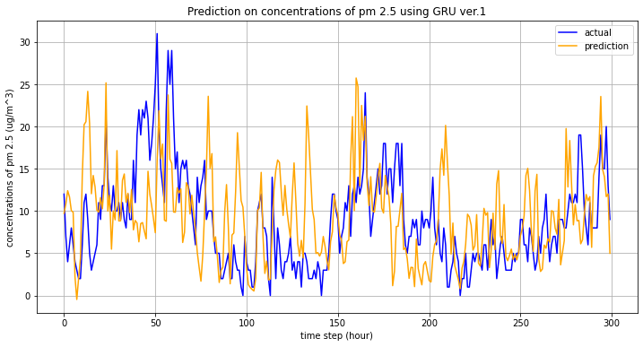
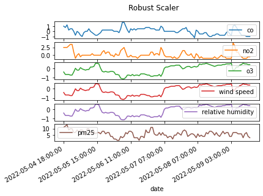

Predicting Concentrations of PM2.5
Contents
Predicting Concentrations of PM2.5¶
import openaq
import pandas as pd
import numpy as np
import matplotlib.pyplot as plt
from sklearn.preprocessing import RobustScaler
from aqtools import aqutils as u
from tensorflow.keras import Sequential
from tensorflow.keras.layers import Dense, GRU
from tensorflow.keras.callbacks import EarlyStopping, ModelCheckpoint
from tensorflow.keras.optimizers import SGD
from noaa_sdk import noaa
api = openaq.OpenAQ()
Version 1¶
# Parameter setting
date_from = '2021-09-01T00:00:00Z' # Default: PST
date_to = '2022-03-01T00:00:00Z'
city = 'San Francisco-Oakland-Fremont'
location = 'Oakland'
date_retrieval_limit = 4000
# co
pollutant = 'co'
status, resp = api.measurements(city=city,
location=location, parameter=pollutant,
date_from=date_from,
date_to=date_to,
limit=date_retrieval_limit)
r = resp['results']
df_co = u.date_pollutant_value(r, pollutant)
df_co.head(3)
| date | co | |
|---|---|---|
| 3600 | 2021-08-31 17:00:00 | 0.3 |
| 3599 | 2021-08-31 18:00:00 | 0.3 |
| 3598 | 2021-08-31 19:00:00 | 0.3 |
# no2
pollutant = 'no2'
status, resp = api.measurements(city=city,
location=location, parameter=pollutant,
date_from=date_from,
date_to=date_to,
limit=date_retrieval_limit)
r = resp['results']
df_no2 = u.date_pollutant_value(r, pollutant)
df_no2.head(3)
| date | no2 | |
|---|---|---|
| 3599 | 2021-08-31 17:00:00 | 0.002 |
| 3598 | 2021-08-31 18:00:00 | 0.003 |
| 3597 | 2021-08-31 19:00:00 | 0.004 |
# o3
pollutant = 'o3'
status, resp = api.measurements(city=city,
location=location, parameter=pollutant,
date_from=date_from,
date_to=date_to,
limit=date_retrieval_limit)
r = resp['results']
df_o3 = pd.DataFrame(data=r)
df_o3 = u.date_pollutant_value(r, pollutant)
df_o3.head(3)
| date | o3 | |
|---|---|---|
| 3600 | 2021-08-31 17:00:00 | 0.031 |
| 3599 | 2021-08-31 18:00:00 | 0.031 |
| 3598 | 2021-08-31 19:00:00 | 0.030 |
# pm25
pollutant = 'pm25'
status, resp = api.measurements(city=city,
location=location, parameter=pollutant,
date_from=date_from,
date_to=date_to,
limit=date_retrieval_limit)
r = resp['results']
df_pm25 = pd.DataFrame(data=r)
df_pm25 = u.date_pollutant_value(r, pollutant)
df_pm25.head(3)
| date | pm25 | |
|---|---|---|
| 3751 | 2021-08-31 17:00:00 | 11 |
| 3750 | 2021-08-31 18:00:00 | 12 |
| 3749 | 2021-08-31 19:00:00 | 15 |
# Merge dataframes on 'date' (find the intersection of values based on 'date')
df = df_co.merge(df_no2, how='inner', on='date')
df = df.merge(df_o3, how='inner', on='date')
df = df.merge(df_pm25, how='inner', on='date')
df = df.set_index(['date'])
df
| co | no2 | o3 | pm25 | |
|---|---|---|---|---|
| date | ||||
| 2021-08-31 17:00:00 | 0.30 | 0.002 | 0.031 | 11 |
| 2021-08-31 18:00:00 | 0.30 | 0.003 | 0.031 | 12 |
| 2021-08-31 19:00:00 | 0.30 | 0.004 | 0.030 | 15 |
| 2021-08-31 20:00:00 | 0.36 | 0.006 | 0.029 | 14 |
| 2021-08-31 21:00:00 | 0.37 | 0.006 | 0.028 | 12 |
| ... | ... | ... | ... | ... |
| 2022-02-28 12:00:00 | 0.47 | 0.025 | 0.023 | 15 |
| 2022-02-28 13:00:00 | 0.46 | 0.025 | 0.026 | 20 |
| 2022-02-28 14:00:00 | 0.38 | 0.016 | 0.038 | 13 |
| 2022-02-28 15:00:00 | 0.32 | 0.012 | 0.043 | 9 |
| 2022-02-28 16:00:00 | 0.30 | 0.011 | 0.040 | 6 |
3526 rows × 4 columns
# MinMax Scaling
scaler = RobustScaler()
co_scaled = scaler.fit_transform(df['co'].values.reshape(-1, 1))
df['co'] = co_scaled
scaler = RobustScaler()
co_scaled = scaler.fit_transform(df['no2'].values.reshape(-1, 1))
df['no2'] = co_scaled
scaler = RobustScaler()
co_scaled = scaler.fit_transform(df['o3'].values.reshape(-1, 1))
df['o3'] = co_scaled
df.plot(subplots=True, title='Robust Scaler')
fig = plt.gcf()
fig.savefig("./figures/scaling_ver1.png")
plt.show()

# Make data stationary
# Differencing technique was applied
co_diff = u.differencing(df['co'].values)
no2_diff = u.differencing(df['no2'].values)
o3_diff = u.differencing(df['o3'].values)
# Delete the first row
df = df.iloc[:-1, :]
df['co'] = co_diff
df['no2'] = no2_diff
df['o3'] = o3_diff
df.plot(subplots=True, title='Differencing')
fig = plt.gcf()
fig.savefig("./figures/differencing_ver1.png")
plt.show()
/tmp/ipykernel_11733/490855220.py:10: SettingWithCopyWarning:
A value is trying to be set on a copy of a slice from a DataFrame.
Try using .loc[row_indexer,col_indexer] = value instead
See the caveats in the documentation: https://pandas.pydata.org/pandas-docs/stable/user_guide/indexing.html#returning-a-view-versus-a-copy
df['co'] = co_diff
/tmp/ipykernel_11733/490855220.py:11: SettingWithCopyWarning:
A value is trying to be set on a copy of a slice from a DataFrame.
Try using .loc[row_indexer,col_indexer] = value instead
See the caveats in the documentation: https://pandas.pydata.org/pandas-docs/stable/user_guide/indexing.html#returning-a-view-versus-a-copy
df['no2'] = no2_diff
/tmp/ipykernel_11733/490855220.py:12: SettingWithCopyWarning:
A value is trying to be set on a copy of a slice from a DataFrame.
Try using .loc[row_indexer,col_indexer] = value instead
See the caveats in the documentation: https://pandas.pydata.org/pandas-docs/stable/user_guide/indexing.html#returning-a-view-versus-a-copy
df['o3'] = o3_diff
# correlation among features
df_corr = df.corr()
df_corr.to_csv('./tables/correlation_ver1.csv')
df_corr
| co | no2 | o3 | pm25 | |
|---|---|---|---|---|
| co | 1.000000 | 0.673827 | -0.623135 | -0.118771 |
| no2 | 0.673827 | 1.000000 | -0.770821 | -0.113108 |
| o3 | -0.623135 | -0.770821 | 1.000000 | 0.080400 |
| pm25 | -0.118771 | -0.113108 | 0.080400 | 1.000000 |
# feature vectors: shape (num of data, window size, num of features)
feature_np = df[['co', 'no2', 'o3']].to_numpy()
# label vactors: shape (num of data,)
label_np = df[['pm25']].to_numpy()
X = []
y = []
# how many timesteps we want to look at --> default 8 (hours)
for i in range(8, len(feature_np)):
X.append(feature_np[i-8:i, :])
y.append(label_np[i])
X, y = np.array(X, dtype=np.float64), np.array(y, dtype=np.float64)
X.shape, y.shape
((3517, 8, 3), (3517, 1))
TEST_SIZE = 300
X_train = X[:-TEST_SIZE]
y_train = y[:-TEST_SIZE]
X_test = X[-TEST_SIZE:]
y_test = y[-TEST_SIZE:]
X_train.shape, y_train.shape, X_test.shape, y_test.shape
((3217, 8, 3), (3217, 1), (300, 8, 3), (300, 1))
# Predict pm2.5 using Gated Recurrent Unit
model = Sequential()
model.add(GRU(units=50,
return_sequences=True,
input_shape=X_train[0].shape,
activation='tanh'))
model.add(GRU(units=50, activation='tanh'))
model.add(Dense(units=2))
# Compiling the GRU
model.compile(optimizer=SGD(learning_rate=0.01, decay=1e-7,
momentum=0.9, nesterov=False),
loss='mse')
model.summary()
2022-05-11 14:09:01.380168: I tensorflow/core/platform/cpu_feature_guard.cc:151] This TensorFlow binary is optimized with oneAPI Deep Neural Network Library (oneDNN) to use the following CPU instructions in performance-critical operations: SSE4.1 SSE4.2 AVX AVX2 FMA
To enable them in other operations, rebuild TensorFlow with the appropriate compiler flags.
Model: "sequential"
_________________________________________________________________
Layer (type) Output Shape Param #
=================================================================
gru (GRU) (None, 8, 50) 8250
gru_1 (GRU) (None, 50) 15300
dense (Dense) (None, 2) 102
=================================================================
Total params: 23,652
Trainable params: 23,652
Non-trainable params: 0
_________________________________________________________________
# model training
#early_stop = EarlyStopping(monitor='loss', mode='min', verbose=0, patience=10)
#model.fit(X_train, y_train, epochs=100, batch_size=150, verbose=1, callbacks=[early_stop])
model.fit(X_train, y_train, epochs=100, batch_size=150, verbose=1)
Epoch 1/100
22/22 [==============================] - 3s 15ms/step - loss: 63.9245
Epoch 2/100
22/22 [==============================] - 0s 13ms/step - loss: 48.2013
Epoch 3/100
22/22 [==============================] - 0s 13ms/step - loss: 46.2972
Epoch 4/100
22/22 [==============================] - 0s 14ms/step - loss: 46.3311
Epoch 5/100
22/22 [==============================] - 0s 14ms/step - loss: 46.0769
Epoch 6/100
22/22 [==============================] - 0s 13ms/step - loss: 47.0481
Epoch 7/100
22/22 [==============================] - 0s 14ms/step - loss: 45.9698
Epoch 8/100
22/22 [==============================] - 0s 13ms/step - loss: 45.3761
Epoch 9/100
22/22 [==============================] - 0s 13ms/step - loss: 44.7721
Epoch 10/100
22/22 [==============================] - 0s 14ms/step - loss: 41.0455
Epoch 11/100
22/22 [==============================] - 0s 14ms/step - loss: 40.2695
Epoch 12/100
22/22 [==============================] - 0s 14ms/step - loss: 41.2605
Epoch 13/100
22/22 [==============================] - 0s 13ms/step - loss: 39.4115
Epoch 14/100
22/22 [==============================] - 0s 14ms/step - loss: 37.1630
Epoch 15/100
22/22 [==============================] - 0s 14ms/step - loss: 37.6529
Epoch 16/100
22/22 [==============================] - 0s 13ms/step - loss: 35.4869
Epoch 17/100
22/22 [==============================] - 0s 14ms/step - loss: 35.9424
Epoch 18/100
22/22 [==============================] - 0s 14ms/step - loss: 36.2641
Epoch 19/100
22/22 [==============================] - 0s 13ms/step - loss: 34.3795
Epoch 20/100
22/22 [==============================] - 0s 13ms/step - loss: 33.7533
Epoch 21/100
22/22 [==============================] - 0s 14ms/step - loss: 34.1249
Epoch 22/100
22/22 [==============================] - 0s 12ms/step - loss: 32.7698
Epoch 23/100
22/22 [==============================] - 0s 12ms/step - loss: 32.3775
Epoch 24/100
22/22 [==============================] - 0s 13ms/step - loss: 32.4814
Epoch 25/100
22/22 [==============================] - 0s 13ms/step - loss: 31.3374
Epoch 26/100
22/22 [==============================] - 0s 12ms/step - loss: 30.6436
Epoch 27/100
22/22 [==============================] - 0s 12ms/step - loss: 29.3311
Epoch 28/100
22/22 [==============================] - 0s 13ms/step - loss: 31.3755
Epoch 29/100
22/22 [==============================] - 0s 12ms/step - loss: 29.2711
Epoch 30/100
22/22 [==============================] - 0s 12ms/step - loss: 27.9217
Epoch 31/100
22/22 [==============================] - 0s 13ms/step - loss: 27.4560
Epoch 32/100
22/22 [==============================] - 0s 13ms/step - loss: 25.8603
Epoch 33/100
22/22 [==============================] - 0s 12ms/step - loss: 26.2358
Epoch 34/100
22/22 [==============================] - 0s 13ms/step - loss: 24.8579
Epoch 35/100
22/22 [==============================] - 0s 13ms/step - loss: 23.9963
Epoch 36/100
22/22 [==============================] - 0s 13ms/step - loss: 22.8424
Epoch 37/100
22/22 [==============================] - 0s 12ms/step - loss: 22.9477
Epoch 38/100
22/22 [==============================] - 0s 12ms/step - loss: 24.2482
Epoch 39/100
22/22 [==============================] - 0s 13ms/step - loss: 21.5218
Epoch 40/100
22/22 [==============================] - 0s 13ms/step - loss: 20.3683
Epoch 41/100
22/22 [==============================] - 0s 12ms/step - loss: 19.4128
Epoch 42/100
22/22 [==============================] - 0s 14ms/step - loss: 18.2012
Epoch 43/100
22/22 [==============================] - 0s 13ms/step - loss: 17.0342
Epoch 44/100
22/22 [==============================] - 0s 12ms/step - loss: 16.0729
Epoch 45/100
22/22 [==============================] - 0s 13ms/step - loss: 15.0136
Epoch 46/100
22/22 [==============================] - 0s 14ms/step - loss: 13.9102
Epoch 47/100
22/22 [==============================] - 0s 15ms/step - loss: 13.5035
Epoch 48/100
22/22 [==============================] - 0s 15ms/step - loss: 12.3798
Epoch 49/100
22/22 [==============================] - 0s 13ms/step - loss: 12.8764
Epoch 50/100
22/22 [==============================] - 0s 13ms/step - loss: 12.7773
Epoch 51/100
22/22 [==============================] - 0s 13ms/step - loss: 11.1810
Epoch 52/100
22/22 [==============================] - 0s 14ms/step - loss: 11.9169
Epoch 53/100
22/22 [==============================] - 0s 14ms/step - loss: 10.4509
Epoch 54/100
22/22 [==============================] - 0s 14ms/step - loss: 9.0696
Epoch 55/100
22/22 [==============================] - 0s 14ms/step - loss: 9.6583
Epoch 56/100
22/22 [==============================] - 0s 12ms/step - loss: 9.0751
Epoch 57/100
22/22 [==============================] - 0s 12ms/step - loss: 7.4573
Epoch 58/100
22/22 [==============================] - 0s 12ms/step - loss: 7.2251
Epoch 59/100
22/22 [==============================] - 0s 13ms/step - loss: 6.5863
Epoch 60/100
22/22 [==============================] - 0s 13ms/step - loss: 5.9337
Epoch 61/100
22/22 [==============================] - 0s 13ms/step - loss: 6.3221
Epoch 62/100
22/22 [==============================] - 0s 13ms/step - loss: 5.5133
Epoch 63/100
22/22 [==============================] - 0s 13ms/step - loss: 4.7795
Epoch 64/100
22/22 [==============================] - 0s 13ms/step - loss: 4.5114
Epoch 65/100
22/22 [==============================] - 0s 13ms/step - loss: 4.5905
Epoch 66/100
22/22 [==============================] - 0s 13ms/step - loss: 4.5400
Epoch 67/100
22/22 [==============================] - 0s 13ms/step - loss: 4.0118
Epoch 68/100
22/22 [==============================] - 0s 13ms/step - loss: 4.1340
Epoch 69/100
22/22 [==============================] - 0s 13ms/step - loss: 3.6518
Epoch 70/100
22/22 [==============================] - 0s 13ms/step - loss: 3.4388
Epoch 71/100
22/22 [==============================] - 0s 13ms/step - loss: 3.2069
Epoch 72/100
22/22 [==============================] - 0s 12ms/step - loss: 2.9892
Epoch 73/100
22/22 [==============================] - 0s 13ms/step - loss: 3.1259
Epoch 74/100
22/22 [==============================] - 0s 13ms/step - loss: 2.8106
Epoch 75/100
22/22 [==============================] - 0s 13ms/step - loss: 2.6646
Epoch 76/100
22/22 [==============================] - 0s 13ms/step - loss: 2.6157
Epoch 77/100
22/22 [==============================] - 0s 13ms/step - loss: 2.3599
Epoch 78/100
22/22 [==============================] - 0s 12ms/step - loss: 2.2825
Epoch 79/100
22/22 [==============================] - 0s 12ms/step - loss: 2.0742
Epoch 80/100
22/22 [==============================] - 0s 13ms/step - loss: 2.1042
Epoch 81/100
22/22 [==============================] - 0s 14ms/step - loss: 2.1519
Epoch 82/100
22/22 [==============================] - 0s 14ms/step - loss: 1.9634
Epoch 83/100
22/22 [==============================] - 0s 14ms/step - loss: 1.6793
Epoch 84/100
22/22 [==============================] - 0s 13ms/step - loss: 1.5826
Epoch 85/100
22/22 [==============================] - 0s 13ms/step - loss: 1.5312
Epoch 86/100
22/22 [==============================] - 0s 13ms/step - loss: 1.4527
Epoch 87/100
22/22 [==============================] - 0s 14ms/step - loss: 1.2915
Epoch 88/100
22/22 [==============================] - 0s 14ms/step - loss: 1.3265
Epoch 89/100
22/22 [==============================] - 0s 14ms/step - loss: 1.1764
Epoch 90/100
22/22 [==============================] - 0s 14ms/step - loss: 1.3851
Epoch 91/100
22/22 [==============================] - 0s 13ms/step - loss: 1.2696
Epoch 92/100
22/22 [==============================] - 0s 12ms/step - loss: 1.1789
Epoch 93/100
22/22 [==============================] - 0s 12ms/step - loss: 1.2087
Epoch 94/100
22/22 [==============================] - 0s 13ms/step - loss: 1.0677
Epoch 95/100
22/22 [==============================] - 0s 13ms/step - loss: 1.0761
Epoch 96/100
22/22 [==============================] - 0s 13ms/step - loss: 1.0010
Epoch 97/100
22/22 [==============================] - 0s 12ms/step - loss: 0.8501
Epoch 98/100
22/22 [==============================] - 0s 12ms/step - loss: 0.8602
Epoch 99/100
22/22 [==============================] - 0s 13ms/step - loss: 0.8657
Epoch 100/100
22/22 [==============================] - 0s 13ms/step - loss: 1.0275
<keras.callbacks.History at 0x7f1c787f0670>
pred = model.predict(X_test)
pred = [p.mean() for p in pred]
plt.figure(figsize=(12, 6))
plt.plot(y_test, label='actual', color='blue')
plt.plot(pred, label='prediction', color='orange')
plt.title('Prediction on cencentrations of pm 2.5 using GRU ver.1')
plt.xlabel('time step (hour)')
plt.ylabel('concentrations of pm 2.5 (ug/m^3)')
plt.grid()
plt.legend(loc='best')
plt.savefig('./figures/prediction_results_ver1.png')
plt.show()

Version 2¶
Regression with wind speed and relative humidity data¶
date_from = '2022-05-02T00:00:00Z'
date_to = '2022-05-10T00:00:00Z'
city = 'San Francisco-Oakland-Fremont'
location = 'Oakland'
date_retrieval_limit = 150
date_from_utc = u.pst_to_utc(date_from)
date_to_utc = u.pst_to_utc(date_to)
# co
# From 2022-05-02 To 2022-05-10
pollutant = 'co'
status, resp = api.measurements(city=city,
location=location, parameter=pollutant,
date_from=date_from,
date_to=date_to,
limit=date_retrieval_limit)
r = resp['results']
df_co = u.date_pollutant_value(r, pollutant)
df_co.head(3)
| date | co | |
|---|---|---|
| 149 | 2022-05-02 23:00:00 | 0.42 |
| 148 | 2022-05-03 00:00:00 | 0.29 |
| 147 | 2022-05-03 01:00:00 | 0.29 |
# no2
pollutant = 'no2'
status, resp = api.measurements(city=city,
location=location, parameter=pollutant,
date_from=date_from,
date_to=date_to,
limit=date_retrieval_limit)
r = resp['results']
df_no2 = u.date_pollutant_value(r, pollutant)
df_no2.head(3)
| date | no2 | |
|---|---|---|
| 149 | 2022-05-02 23:00:00 | 0.013 |
| 148 | 2022-05-03 00:00:00 | 0.007 |
| 147 | 2022-05-03 01:00:00 | 0.006 |
# o3
pollutant = 'o3'
status, resp = api.measurements(city=city,
location=location, parameter=pollutant,
date_from=date_from,
date_to=date_to,
limit=date_retrieval_limit)
r = resp['results']
df_o3 = pd.DataFrame(data=r)
df_o3 = u.date_pollutant_value(r, pollutant)
df_o3.head(3)
| date | o3 | |
|---|---|---|
| 149 | 2022-05-02 23:00:00 | 0.016 |
| 148 | 2022-05-03 00:00:00 | 0.019 |
| 147 | 2022-05-03 01:00:00 | 0.019 |
# pm25
pollutant = 'pm25'
status, resp = api.measurements(city=city,
location=location, parameter=pollutant,
date_from=date_from,
date_to=date_to,
limit=date_retrieval_limit)
r = resp['results']
df_pm25 = pd.DataFrame(data=r)
df_pm25 = u.date_pollutant_value(r, pollutant)
df_pm25.head(3)
| date | pm25 | |
|---|---|---|
| 149 | 2022-05-03 04:00:00 | 8 |
| 148 | 2022-05-03 05:00:00 | 8 |
| 147 | 2022-05-03 06:00:00 | 7 |
n = noaa.NOAA()
res = n.get_observations('94603', 'US', start=date_from_utc, end=date_to_utc, num_of_stations=1)
dates = []
windspeed = []
relativehum = []
for i in res:
dates.append(u.utc_to_pst(i['timestamp']))
windspeed.append(i['windSpeed']['value'])
relativehum.append(i['relativeHumidity']['value'])
df_w = pd.DataFrame()
df_w['date'] = dates
df_w['wind speed'] = windspeed
df_w['relative humidity'] = relativehum
df_w['date'] = pd.to_datetime(df_w['date'])
# fill na with median
df_w[['wind speed', 'relative humidity']] = df_w[['wind speed', 'relative humidity']].fillna(df_w[['wind speed', 'relative humidity']].median())
df_w = df_w.sort_values(by="date")
# df.to_csv('./fillna weather.csv')
df_w.head(3)
| date | wind speed | relative humidity | |
|---|---|---|---|
| 57 | 2022-05-04 07:00:00 | 18.36 | 74.290523 |
| 95 | 2022-05-04 09:00:00 | 9.36 | 72.237266 |
| 55 | 2022-05-04 10:00:00 | 18.36 | 62.603058 |
df = df_co.merge(df_no2, how='inner', on='date')
df = df.merge(df_o3, how='inner', on='date')
df = df.merge(df_w, how='inner', on='date')
df = df.merge(df_pm25, how='inner', on='date')
df = df.set_index(['date'])
df
| co | no2 | o3 | wind speed | relative humidity | pm25 | |
|---|---|---|---|---|---|---|
| date | ||||||
| 2022-05-04 07:00:00 | 0.60 | 0.016 | 0.008 | 18.36 | 74.290523 | 14 |
| 2022-05-04 09:00:00 | 0.41 | 0.013 | 0.024 | 9.36 | 72.237266 | 15 |
| 2022-05-04 10:00:00 | 0.43 | 0.019 | 0.027 | 18.36 | 62.603058 | 18 |
| 2022-05-04 11:00:00 | 0.34 | 0.015 | 0.034 | 9.36 | 45.123994 | 10 |
| 2022-05-04 12:00:00 | 0.29 | 0.013 | 0.038 | 12.96 | 39.569368 | 11 |
| ... | ... | ... | ... | ... | ... | ... |
| 2022-05-09 12:00:00 | 0.22 | 0.002 | 0.041 | 25.92 | 47.248268 | 3 |
| 2022-05-09 13:00:00 | 0.22 | 0.002 | 0.040 | 18.36 | 43.875674 | 6 |
| 2022-05-09 14:00:00 | 0.21 | 0.002 | 0.040 | 27.72 | 43.875674 | 7 |
| 2022-05-09 15:00:00 | 0.21 | 0.003 | 0.039 | 25.92 | 42.044566 | 4 |
| 2022-05-09 16:00:00 | 0.21 | 0.003 | 0.039 | 18.36 | 45.606476 | 3 |
122 rows × 6 columns
# Scaling
scaler = RobustScaler()
co_scaled = scaler.fit_transform(df['co'].values.reshape(-1, 1))
df['co'] = co_scaled
scaler = RobustScaler()
co_scaled = scaler.fit_transform(df['no2'].values.reshape(-1, 1))
df['no2'] = co_scaled
scaler = RobustScaler()
co_scaled = scaler.fit_transform(df['o3'].values.reshape(-1, 1))
df['o3'] = co_scaled
scaler = RobustScaler()
co_scaled = scaler.fit_transform(df['o3'].values.reshape(-1, 1))
df['wind speed'] = co_scaled
scaler = RobustScaler()
co_scaled = scaler.fit_transform(df['o3'].values.reshape(-1, 1))
df['relative humidity'] = co_scaled
plot = df.plot(subplots=True, title='Robust Scaler')
fig = plt.gcf()
fig.savefig("./figures/scaling_ver2.png")
plt.show()

# Make data stationary
# Differencing technique was applied
co_diff = u.differencing(df['co'].values)
no2_diff = u.differencing(df['no2'].values)
o3_diff = u.differencing(df['o3'].values)
ws_diff = u.differencing(df['wind speed'].values)
rh_diff = u.differencing(df['relative humidity'].values)
# Delete the first row
df = df.iloc[:-1, :]
df['co'] = co_diff
df['no2'] = no2_diff
df['o3'] = o3_diff
df['wind speed'] = ws_diff
df['relative humidity'] = rh_diff
plot = df.plot(subplots=True, title='Differencing')
fig = plt.gcf()
fig.savefig("./figures/differencing_ver2.png")
plt.show()
/tmp/ipykernel_11733/478646036.py:12: SettingWithCopyWarning:
A value is trying to be set on a copy of a slice from a DataFrame.
Try using .loc[row_indexer,col_indexer] = value instead
See the caveats in the documentation: https://pandas.pydata.org/pandas-docs/stable/user_guide/indexing.html#returning-a-view-versus-a-copy
df['co'] = co_diff
/tmp/ipykernel_11733/478646036.py:13: SettingWithCopyWarning:
A value is trying to be set on a copy of a slice from a DataFrame.
Try using .loc[row_indexer,col_indexer] = value instead
See the caveats in the documentation: https://pandas.pydata.org/pandas-docs/stable/user_guide/indexing.html#returning-a-view-versus-a-copy
df['no2'] = no2_diff
/tmp/ipykernel_11733/478646036.py:14: SettingWithCopyWarning:
A value is trying to be set on a copy of a slice from a DataFrame.
Try using .loc[row_indexer,col_indexer] = value instead
See the caveats in the documentation: https://pandas.pydata.org/pandas-docs/stable/user_guide/indexing.html#returning-a-view-versus-a-copy
df['o3'] = o3_diff
/tmp/ipykernel_11733/478646036.py:15: SettingWithCopyWarning:
A value is trying to be set on a copy of a slice from a DataFrame.
Try using .loc[row_indexer,col_indexer] = value instead
See the caveats in the documentation: https://pandas.pydata.org/pandas-docs/stable/user_guide/indexing.html#returning-a-view-versus-a-copy
df['wind speed'] = ws_diff
/tmp/ipykernel_11733/478646036.py:16: SettingWithCopyWarning:
A value is trying to be set on a copy of a slice from a DataFrame.
Try using .loc[row_indexer,col_indexer] = value instead
See the caveats in the documentation: https://pandas.pydata.org/pandas-docs/stable/user_guide/indexing.html#returning-a-view-versus-a-copy
df['relative humidity'] = rh_diff

# correlation among features
df_corr = df.corr()
df_corr.to_csv('./tables/correlation_ver2.csv')
df_corr
| co | no2 | o3 | wind speed | relative humidity | pm25 | |
|---|---|---|---|---|---|---|
| co | 1.000000 | 0.599696 | -0.725872 | -0.725872 | -0.725872 | -0.334219 |
| no2 | 0.599696 | 1.000000 | -0.687908 | -0.687908 | -0.687908 | -0.187019 |
| o3 | -0.725872 | -0.687908 | 1.000000 | 1.000000 | 1.000000 | 0.294662 |
| wind speed | -0.725872 | -0.687908 | 1.000000 | 1.000000 | 1.000000 | 0.294662 |
| relative humidity | -0.725872 | -0.687908 | 1.000000 | 1.000000 | 1.000000 | 0.294662 |
| pm25 | -0.334219 | -0.187019 | 0.294662 | 0.294662 | 0.294662 | 1.000000 |
# feature vectors: shape (num of data, window size, num of features)
feature_np = df[['co', 'no2', 'o3', 'wind speed', 'relative humidity']].to_numpy()
# label vactors: shape (num of data,)
label_np = df[['pm25']].to_numpy()
X = []
y = []
# how many timesteps we want to look at --> default 8 (hours)
for i in range(8, len(feature_np)):
X.append(feature_np[i-8:i, :])
y.append(label_np[i])
X, y = np.array(X, dtype=np.float64), np.array(y, dtype=np.float64)
X.shape, y.shape
((113, 8, 5), (113, 1))
TEST_SIZE = 30
X_train = X[:-TEST_SIZE]
y_train = y[:-TEST_SIZE]
X_test = X[-TEST_SIZE:]
y_test = y[-TEST_SIZE:]
X_train.shape, y_train.shape, X_test.shape, y_test.shape
((83, 8, 5), (83, 1), (30, 8, 5), (30, 1))
# Predict pm2.5 using Gated Recurrent Unit
model = Sequential()
model.add(GRU(units=50,
return_sequences=True,
input_shape=X_train[0].shape,
activation='tanh'))
model.add(GRU(units=50, activation='tanh'))
model.add(Dense(units=2))
# Compiling the GRU
model.compile(optimizer=SGD(learning_rate=0.01, decay=1e-7,
momentum=0.9, nesterov=False),
loss='mse')
model.summary()
Model: "sequential_2"
_________________________________________________________________
Layer (type) Output Shape Param #
=================================================================
gru_4 (GRU) (None, 8, 50) 8550
gru_5 (GRU) (None, 50) 15300
dense_2 (Dense) (None, 2) 102
=================================================================
Total params: 23,952
Trainable params: 23,952
Non-trainable params: 0
_________________________________________________________________
# model training
early_stop = EarlyStopping(monitor='loss', mode='min', verbose=0, patience=10)
model.fit(X_train, y_train, epochs=50, batch_size=100, verbose=1, callbacks=[early_stop])
Epoch 1/50
1/1 [==============================] - 3s 3s/step - loss: 45.2418
Epoch 2/50
1/1 [==============================] - 0s 13ms/step - loss: 40.6291
Epoch 3/50
1/1 [==============================] - 0s 14ms/step - loss: 32.6973
Epoch 4/50
1/1 [==============================] - 0s 13ms/step - loss: 22.4436
Epoch 5/50
1/1 [==============================] - 0s 14ms/step - loss: 12.0291
Epoch 6/50
1/1 [==============================] - 0s 13ms/step - loss: 6.9773
Epoch 7/50
1/1 [==============================] - 0s 14ms/step - loss: 9.6087
Epoch 8/50
1/1 [==============================] - 0s 14ms/step - loss: 13.7595
Epoch 9/50
1/1 [==============================] - 0s 12ms/step - loss: 13.3442
Epoch 10/50
1/1 [==============================] - 0s 12ms/step - loss: 9.5873
Epoch 11/50
1/1 [==============================] - 0s 13ms/step - loss: 7.1876
Epoch 12/50
1/1 [==============================] - 0s 13ms/step - loss: 7.8250
Epoch 13/50
1/1 [==============================] - 0s 11ms/step - loss: 9.7330
Epoch 14/50
1/1 [==============================] - 0s 14ms/step - loss: 10.6010
Epoch 15/50
1/1 [==============================] - 0s 11ms/step - loss: 9.6402
Epoch 16/50
1/1 [==============================] - 0s 11ms/step - loss: 7.8602
<keras.callbacks.History at 0x7f1c7014b0a0>
pred = model.predict(X_test)
pred = [p.mean() for p in pred]
plt.figure(figsize=(12, 6))
plt.plot(y_test, label='actual', color='blue')
plt.plot(pred, label='prediction', color='orange')
plt.title('Prediction on concentrations of pm 2.5 using GRU ver.2')
plt.xlabel('time step (hour)')
plt.ylabel('concentrations of pm 2.5 (ug/m^3)')
plt.grid()
plt.legend(loc='best')
plt.savefig('./figures/prediction_results_ver2.png')
plt.show()